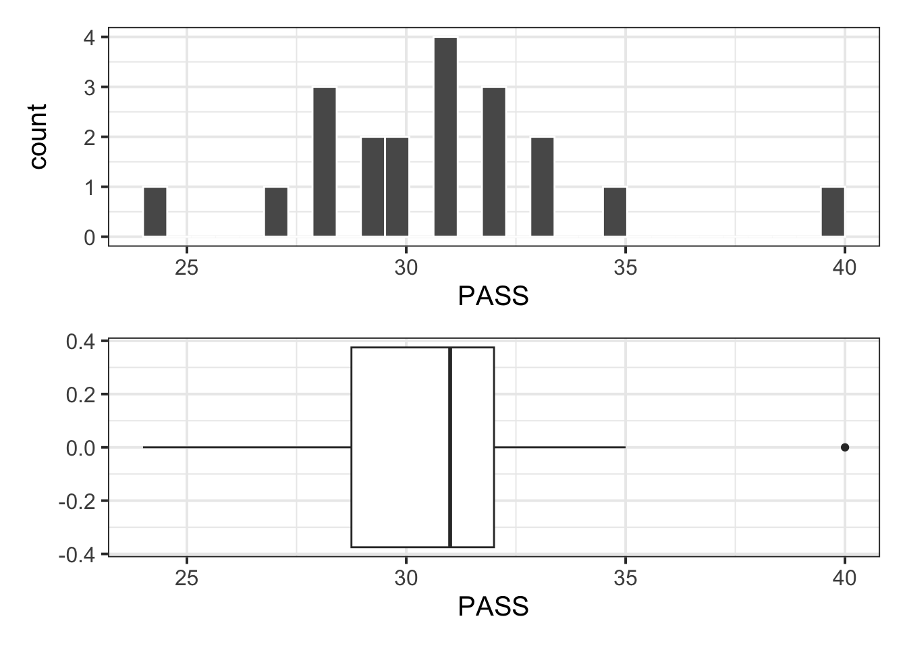

| Variable Name | Description |
|---|---|
| sid | Subject identifier |
| school | School each subject belonged to |
| PASS | Total endorsement of procrastination score |
Hypothesis testing: critical values
Semester 2 - Week 3
1 Formative Report C
Instructions and data were released in week 1 of semester 2.
1.1 This week’s task
Task C3
C3) At the 5% significance level and using the critical value method, test whether the 2012 mean graduation rate for female students at colleges and universities in the United States is significantly different from a rate of 50 percent.
Sub-steps
Below there are sub-steps you need to consider to complete this week’s task.
Tip
To see the hints, hover your cursor on the superscript numbers.
README
The steps below will largely overlap with last week’s lab. This week we are doing hypothesis testing using an equivalent approach: the critical-value method. As such, this will lead to repetition and duplicate information in your file.
In the next weeks, tidy up your report text to only include one of the two approaches to hypothesis testing, either the p-value method or the critical-value method. Pick the one your understand better and remove duplication of information in your report write-ups.
- Reopen last week’s Rmd file, as you will continue last week’s work and build on it.1
- Specify the null and alternative hypotheses for the research question specified in Task C3.2
- Compute the observed value of the t-statistic.3
The t-statistic follows a t-distribution with how many degrees of freedom? You will need this number for the next task.4
Compute the critical values of the null distribution using the appropriate significance level.5
Make a decision on whether or not to reject the null hypothesis.
Provide a write up of your results in the context of the research question.
Reporting with critical values When you use the critical value method, you don’t have a computed p-value, so the reporting will only say whether p < .05 or p > .05 depending on whether the observed t-statistic is beyond or not beyond the critical value(s).
-
If \(t\) is in the rejection region:
- p < .05 (if you use a different \(\alpha\), change accordingly)
-
If \(t\) is not in the rejection region:
- p > .05 (if you use a different \(\alpha\), change accordingly)
- Add any missing write-ups in your report, and start tidying it up by removing duplicate information. Pick one of the two equivalent methods to perform an hypothesis test (p-value or critical value approach) and only report one of the two.
2 Worked example
The Procrastination Assessment Scale for Students (PASS) was designed to assess how individuals approach decision situations, specifically the tendency of individuals to postpone decisions (Solomon & Rothblum, 1984).
The PASS assesses the prevalence of procrastination in six areas: writing a paper; studying for an exam; keeping up with reading; administrative tasks; attending meetings; and performing general tasks. For a measure of total endorsement of procrastination, responses to 18 questions (each measured on a 1-5 scale) are summed together, providing a single score for each participant (range 0 to 90). The mean score from Solomon & Rothblum, 1984 was 33.
Research question:
Does the mean procrastination score of Edinburgh University students differ from the Solomon & Rothblum average of 33?
To answer this question, we will use data collected for a random sample of students from the University of Edinburgh: https://uoepsy.github.io/data/pass_scores.csv
Necessary packages:
- tidyverse for using
read_csv(), usingsummarise()andggplot(). - patchwork for arranging plots side by side or underneath
- kableExtra for creating user-friendly tables
Read the data into R:
To inspect the data:
head(pass_scores)# A tibble: 6 × 3
sid school PASS
<chr> <chr> <dbl>
1 s_1 GeoSciences 31
2 s_2 ECA 24
3 s_3 LAW 32
4 s_4 ECA 40
5 s_5 LAW 28
6 s_6 SSPS 31glimpse(pass_scores)Rows: 20
Columns: 3
$ sid <chr> "s_1", "s_2", "s_3", "s_4", "s_5", "s_6", "s_7", "s_8", "s_9", …
$ school <chr> "GeoSciences", "ECA", "LAW", "ECA", "LAW", "SSPS", "PPLS", "SLL…
$ PASS <dbl> 31, 24, 32, 40, 28, 31, 30, 28, 32, 29, 28, 33, 35, 33, 30, 31,…summary(pass_scores) sid school PASS
Length:20 Length:20 Min. :24.00
Class :character Class :character 1st Qu.:28.75
Mode :character Mode :character Median :31.00
Mean :30.70
3rd Qu.:32.00
Max. :40.00 Visualise the distribution of PASS scores:
Note
The boxplot highlights an outlier (40). However, this value is well within the plausible range of the scale (0 – 90), hence it is of no concern and the point can be kept for the analysis.
plt_hist <- ggplot(pass_scores, aes(x = PASS)) +
geom_histogram(color = 'white')
plt_box <- ggplot(pass_scores, aes(x = PASS)) +
geom_boxplot()
plt_hist / plt_box
Descriptive statistics:
stats |>
kbl(booktabs = TRUE, digits = 2,
caption = "Descriptive statistics for PASS scores")| n | Min | Max | M | SD |
|---|---|---|---|---|
| 20 | 24 | 40 | 30.7 | 3.31 |
Step 1: Identify the null and alternative hypotheses.
First we need to write the null and alternative hypothesis, which take the form \(H_0 : \mu = \mu_0\) vs \(H_1: \mu \neq \mu_0\). From the research question, we identify the hypothesised value \(\mu_0\) to be 33, hence:
These are written as:
$$H_{0}: \mu = 33$$
$$H_{1}: \mu \neq 33$$In H_{0} and H_{1} the 0 and 1 within curly braces are written as subscripts. The curly braces delimit what goes in the subscript. The symbol \mu denotes the greek letter “mu” that stands for the population mean (a parameter). The symbol \neq means not equal.
\[H_0: \mu = 33\] \[H_1: \mu \neq 33\]
Step 2: Compute the t-statistic
Next, we compute the t-statistics, which compares the difference between the sample and hypothesised mean (\(\bar{x} - \mu_0\)) to the variation due to random sampling (\(SE_{\bar{x}}\)).
To test the hypothesis, we need to compute the t-statistic,
\[ t = \frac{\bar{x} - \mu_0}{SE_{\bar{x}}} \qquad \text{where} \qquad SE_{\bar{x}} = \frac{s}{\sqrt{n}} \]
# Sample mean
xbar <- stats$M
# Standard error
s <- stats$SD
n <- stats$n
se <- s / sqrt(n)
# Observed t-statistic
tobs <- (xbar - 33) / se
tobs[1] -3.107272Step 3: Identify the null distribution, i.e. the distribution of the t-statistic assuming the null to be true.
As the sample size is \(n\) = 20, if the null hypothesis is true the t-statistic will follow a t(19) distribution.
Step 4: Compute the critical values for \(\alpha = 0.05\)
As the alternative hypothesis is two-sided (or two-tailed), we have two critical values \(\pm t^*\) that jointly cut an area of 0.05 beyond them. That area must be equally split in both tails, so 0.025 to the left and 0.025 to the right
Hence:
- \(-t^*\) = -2.093024
- \(+t^*\) = +2.093024
Step 5: Make a decision
Compare the observe statistic to the critical values:
tobs[1] -3.107272tstar[1] -2.093024 2.093024Is the observed t-statistic within the critical values (hence we do not reject) or beyond (hence we reject)?
tobs <= tstar[1][1] TRUEtobs >= tstar[2][1] FALSEUsing the critical-value method, we compare the observed t-statistic, -3.11, with the critical values for the appropriate significance level, -2.09 and 2.09. As -3.11 is not within the two critical values, we reject \(H_0\). In fact, -3.11 is smaller than the lower critical value -2.09.
A potential way to report the t-test results:
Example hypothesis test write-up
At the 5% significance level, the sample data provide significant evidence against the null hypothesis and in favour of the alternative one that the mean procrastination score of Edinburgh University students is different from the Solomon & Rothblum reported average of 33: \(t(19) = -3.11, p < .05\), two-sided.
Important: Difference between \(t\) and \(\pm t^*\)
Note the difference between \(\pm t^*\) and the t-statistic \(t\):
The quantiles or critical values are \(-t^*\) and \(+t^*\). These are computed with
qt(..., df = ...). In the quantiles, the superscript \(*\) is not a multiplication sign!The t-statistic \(t = \frac{\bar{x} - \mu_0}{s / \sqrt{n}}\) computes how many standard errors away from the hypothesised value the sample mean is.
3 Student Glossary
To conclude the lab, add the new functions to the glossary of R functions.
| Function | (package) and use |
|---|---|
geom_histogram |
(tidyverse) creates a histogram |
geom_boxplot |
(tidyverse) creates a boxplot |
summarise |
(tidyverse) used to compute some summaries of data |
n() |
(tidyverse) when used inside of summarise(), it counts the number of rows |
mean |
compute the mean, i.e. the average |
sd |
compute the standard deviation, i.e. the square root of the variance |
abs |
absolute value, i.e. drop the sign |
qt |
compute the quantile of a t-distribution |
Footnotes
Hint: Ask last week’s driver for the Rmd file, they should share it with the group via email or the groups discussion space. To download the file from the server, go to the RStudio Files pane, tick the box next to the Rmd file, and select More > Export.↩︎
-
Hint: Identify the hypothesised value of the mean, \(\mu_0\), and replace that value in the following equations:
\[H_{0} : \mu = \mu_{0}\] \[H_{1} : \mu \neq \mu_{0}\]
Code used to write the above:
$$ H_{0} : \mu = \mu_{0} $$ $$ H_{1} : \mu \neq \mu_{0} $$We write mathematical equations in the text part of an Rmd file, i.e. not inside a code chunk. Wrap a mathematical equation with dollar signs to tell R when an equation starts and ends. Text written within curly braces after an underscore is rendered as a subscript, so
_{0}creates a subscript 0. ```↩︎ -
Hint: Use the following formula for the t-statistic:
\[t = \frac{\bar{x} - \mu_0}{SE_{\bar{x}}} \qquad \text{where} \qquad SE_{\bar{x}} = \frac{s}{\sqrt{n}}\]
In the above:
- \(\bar{x}\) is the sample mean
- \(\mu_0\) is the hypothesised value for the population mean
- \(s\) is the sample standard deviation
- \(n\) is the sample size
Hint: the t-statistic follows a \(t(n-1)\) distribution where \(n-1\) are the degrees of freedom. In the next task, you will need to provide the degrees of freedom to the
qt()function.↩︎